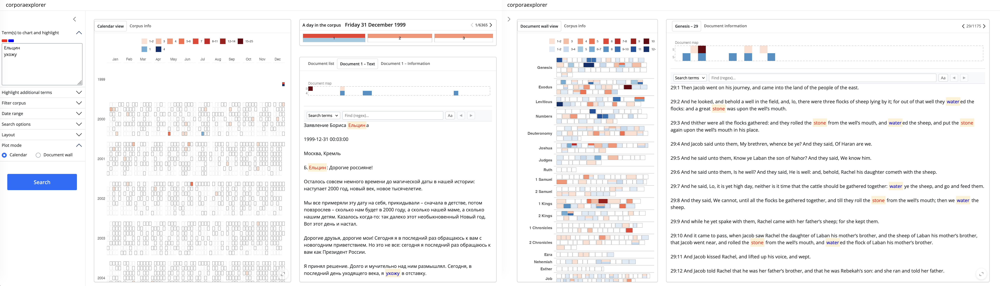

“I really like the application and its simplicity. It looks great and is very functional. … a nice addition to text analysis tools.”
–Kenneth Benoit, creator of quanteda, professor of computational social science at LSE
“I really enjoyed interacting with corporaexplorer. This is exciting work that opens up doors for non-technical users.”
–Tyler Rinker, creator of sentimentr and qdap

Illustrationscreenshots
What is corporaexplorer?
corporaexplorer is an R package that uses the Shiny graphical user interface framework for dynamic exploration of text collections.
corporaexplorer is designed for use with a wide range of text collections; one example could be a collection of tens of thousands of documents scraped from a governmental website; another example could be the collected works of a novelist; a third example could be the chapters of a single book.
corporaexplorer’s intended primary audience are qualitatively oriented researchers who rely on close reading of textual documents as part of their academic activity, but the package should also be a useful supplement for those doing quantitative textual research and wishing to visit the texts under study. Finally, by offering a convenient way to explore any character vector, it can also be useful for a wide range of other R users.
While collecting and preparing the text collections to be explored requires some familiarity with R programming, using the Shiny apps for exploring and extracting documents from the corpus should be fairly intuitive also for those with no programming knowledge, once the apps have been set up by a collaborator. Thus, the aim is for the package to be useful for anyone with a rudimentary knowledge of R – or with collaborators who have such knowledge.
Installation
To install the released version from CRAN, simply run the following from an R console:
Alternatively, to install the development version from GitHub, run the following from an R console:
corporaexplorer works on Mac OS, Windows and Linux. (The Shiny apps look much clunkier on Windows than on the other platforms, but the apps are fully functional.)
Note to developers: The package’s internal test suite uses the shinytest package, which requires that PhantomJS is installed. This can be done through the shinytest::installDependencies() function.
How to cite
Please cite the following paper if you use corporaexplorer in your research.
Gjerde, Kristian Lundby. 2019. “corporaexplorer: An R package for dynamic exploration of text collections.” Journal of Open Source Software 4 (38): 1342. https://doi.org/10.21105/joss.01342.
For a BibTeX entry, use the output from citation(package = "corporaexplorer").
Usage
The corporaexplorer concept is simple, yet has the potential to enhance research work with text collections in a powerful way. Main elements in the interactive apps:
- Input: The ability to filter the corpus and/or highlight documents, based on search patterns (in main text or metadata, including date range).
- Corpus visualisation: An interactive heat-map of the corpus, based on the search input (calendar heat-map or heat-map where each tile represents one document, optionally grouped by metadata properties).
- Document visualisation and display: Easy navigation to and within full-text documents with pattern matches highlighted.
- Document retrieval: Extraction of subsets of the corpus in a format suitable for close reading.
corporaexplorer contains three main functions:
-
prepare_data()converts a data frame to a “corporaexplorerobject”. -
run_corpus_explorer()runs the package’s core feature, a Shiny app for fast and flexible exploration of a “corporaexplorerobject”. -
run_document_extractor()runs a Shiny app for simple retrieval/extraction of documents from a “corporaexplorerobject” in a reading-friendly format.
See the Usage document for more details.
Example corpora
A. Date-based corpora
Many text collections can be freely shared, e.g. documents from governmental websites (such documents are usually equipped with a Creative Commons license or similar). An example corpus can be downloaded for testing here – this is a “corporaexplorerobject” based on a document collection scraped from the Russian governmental website kremlin.ru (7751 documents, more info here). The equivalent material in Russian (10,221 documents) can be downloaded here (but see the note on character encoding below). A third, somewhat bigger (but less carefully prepared) test corpus (26,654 documents) from the same website is available here.1
(The package of course works equally well with text collections that cannot be freely shared, e.g. a collection of newspaper articles etc. retrieved from a database, and indeed with any personal collection of texts that are meaningful to explore with a time aspect.)
The package also includes a tiny “corporaexplorerobject” (see below): corporaexplorer::test_data, which consists of 10 tiny documents and can be used for testing the basic functionality of the package.
B. Text collections that are not organised by date
Not all corpora are organised by date, and it is easy to create a “corporaexplorerobject” from a corpus with a different structure, for example a collection of books, each organised in chapters – or just from a sequence of texts.
See here for an example of how corporaexplorer can be used to explore the Bible, and here for a starter on how to explore Jane Austen’s novels.
A note on platforms and encoding
corporaexplorer works on Mac OS, Windows and Linux, and there are some important differences in how R handles text on the different platforms. If you are working with plain English text, there will most likely be no issues with encoding on any platform. Unfortunately, working with non-ASCII encoded text in R (e.g. non-English characters), can be complicated – in particular on Windows.
On Mac OS or Linux, problems with encoding will likely not arise at all. If problems do arise, they can typically be solved by making the R “locale” unicode-friendly (e.g. Sys.setlocale("LC_ALL", "en_US.UTF-8")). NB! This assumes that the text is UTF-8 encoded, so if changing the locale in this way does not help, make sure that the text is encoded as UTF-8 characters. Alternatively, if you can ascertain the character encoding, set the locale correspondingly.
On Windows, things can be much more complicated. The most important thing is to check carefully that the texts appear as expected in corporaexplorer’s apps, and that the searches function as expected. If there are problems, a good place to start is a blog post with the telling title “Escaping from character encoding hell in R on Windows”.
For (a lot) more information about encoding, see this informative article by David C. Zentgraf.
Contributing
Contributions in the form of feedback, bug reports and code are most welcome. Ways to contribute:
- Contact the maintainer by email.
- Issues and bug reports: File a GitHub issue.
- Fork the source code, modify, and issue a pull request through the project GitHub page.
1. All this material is licensed under Creative Commons Attribution 4.0 International (CC BY 4.0).